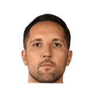

Tim MacMahon:Ryan Anderson:
“We're not worried about James [Harden].Obviously James is the best scorer in the league. He's going to be great.”


Every quote from Ryan Anderson about James Harden in the archive, newest first. Each one links to its original source.
Tim MacMahon:Ryan Anderson:
“We're not worried about James [Harden].Obviously James is the best scorer in the league. He's going to be great.”
Fred Katz:Ryan Anderson:
“James Harden is the MVP, I think he proved tonight. He's proved it all season.”